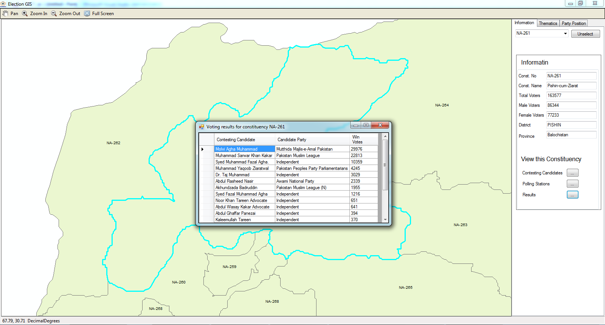

<div class="container">
    <div class="row topspace">
        <article class="col-sm-8 maincontent">
            <div class="your-class">
                <div></div>
                <div></div>
                <div></div>
                <div></div>
                <div></div>
                <div></div>
            </div>
            <br>
            <p>In 2011, I was tasked to develop a desktop based application for on the fly display of results for constituencies of Pakistan.</p>
            <br>
            <p>Arc based Engine was used to render spatial datasets on C# based desktop application that handled the MySql database on the back-end and displayed election results on the app. Results were updated via REST Api at the back-end and dynamically visualized on the fly.</p>
            <br>
            <p>I designed, developed and deployed the app. It was written in Visual Studio Code, C# was used to write it up and ran over windows OS based machines.</p>
        </article>
        <aside class="col-md-4 sidebar sidebar-left">
            <div class="widget">
                <ul class="list-group">
                    <li class="list-group-item pull-left">
                        <h4 class="custom-subsubheader">Company Project</h4>
                        <p><strong>2011</strong></p>
                    </li>
                </ul>
            </div>
        </aside>
    </div>
</div>